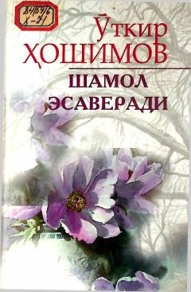

SEOʻtkir Hoshimovning mashhur qissalari jamlangan to'plam.
Ushbu kitobga atoqli yozuvchi Oʻtkir Hoshimovning «Shamol esaveradi», «Qalbingga quloq sol», «Uzun kechalar», «Umr savdosi» va «Oq bulut, oppoq bulut» kabi mashhur qissalari jamlangan. Asarlarda yoshlik, muhabbat, insoniy munosabatlar va hayotiy sinovlar ta'sirchan tarzda tasvirlangan. Yozuvchining o'ziga xos mayin va samimiy uslubi kitobxonni hayot ma'nosi haqida o'ylashga undaydi.